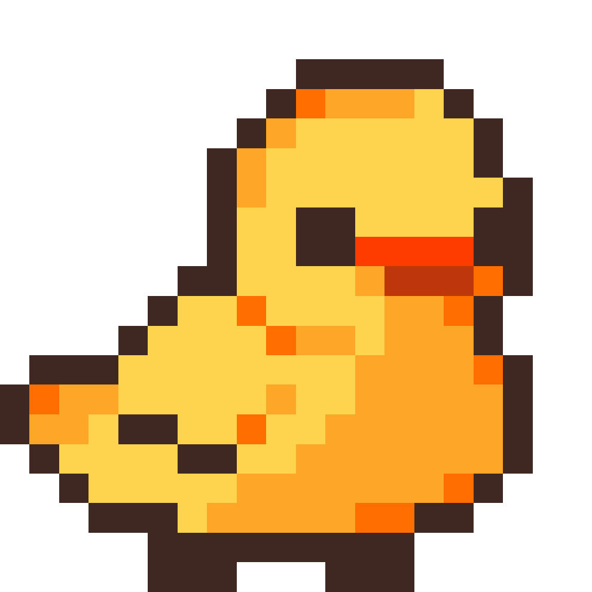
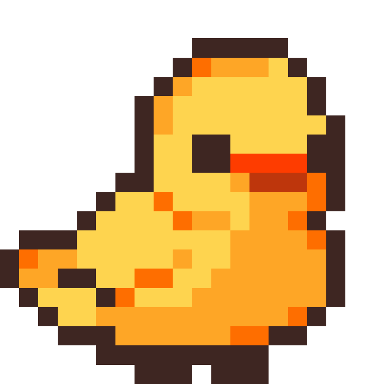
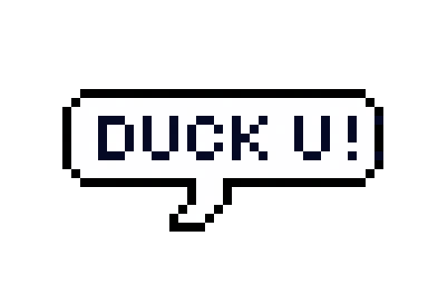

<canvas width="10" height="10" id="canvas"></canvas>

<style>
    :root {
        --frame_0: url("./farmer_left/frame_0_delay-0.1s.png");
        --frame_1: url("./farmer_left/frame_1_delay-0.1s.png");
        --frame_2: url("./farmer_left/frame_2_delay-0.1s.png");
        --frame_3: url("./farmer_left/frame_3_delay-0.1s.png");
      }
    canvas {
        position: absolute;
        background-color: #77DD99;
        background-image: url("grass_dark.gif");
        background-repeat: repeat;
        background-size: 75px;
    }
    html, body {
        margin: 0 !important;
        padding: 0 !important;
        overflow: hidden;
    }
    * {
        -webkit-animation: cursor 400ms infinite;
        animation: cursor 400ms infinite;
    }
      
    @-webkit-keyframes cursor {
        0% {cursor: var(--frame_0), auto;}
        33% {cursor: var(--frame_1), auto;}
        66% {cursor: var(--frame_2), auto;}
        100% {cursor: var(--frame_3), auto;}
    } 
      
    @keyframes cursor {
        0% {cursor: var(--frame_0), auto;}
        33% {cursor: var(--frame_1), auto;}
        66% {cursor: var(--frame_2), auto;}
        100% {cursor: var(--frame_3), auto;}
    } 

    @font-face {
        font-family: 'HumanoidStraight'; 
        src: url('humanoidstraight-webfont.woff') format('woff'); 
    }
    h1 {
         font-family: HumanoidStraight; 
    }
    
</style>

<div class "container" id="container">
    <div class "picture">
        
    </div>
</div>




<script src = "script.js"></script>